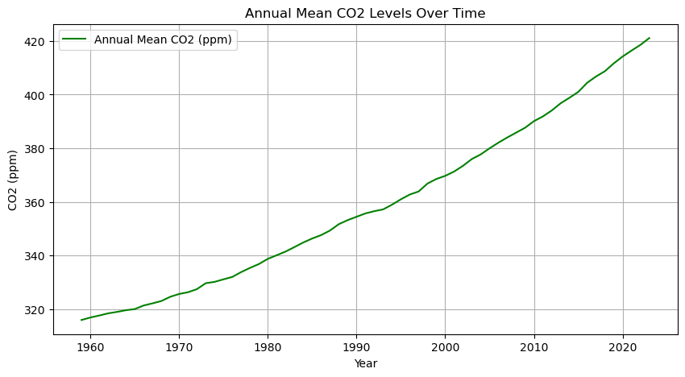
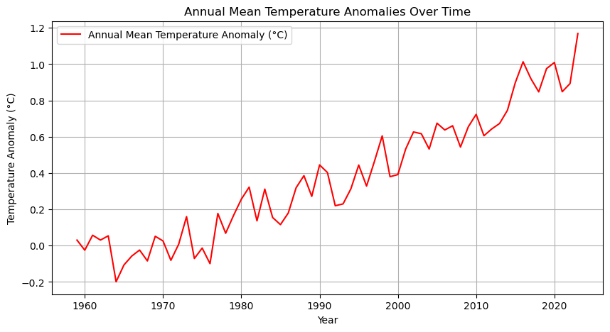

Climate Forecast
Analyzing the relationship between GHG emissions, GDP, and surface temperature anomalies using regression forecasting models.



Data analysis and visualization projects covering climate, democracy, health, money, and more.
Analyzing the relationship between GHG emissions, GDP, and surface temperature anomalies using regression forecasting models.
Investigating the relationship between HDI, CPI, and GINI indexes, and applying classification techniques for analysis.